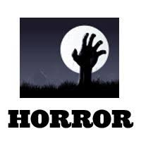

Horror is a film genre that seeks to elicit fear or disgust in its audience for entertainment purposes.
The horror genre, with its spine-chilling tales, heart-stopping scares, and bone-chilling atmosphere, stands as a testament to humanity's fascination with the unknown and the macabre. From the ancient legends of monsters and ghosts to the modern-day nightmares of psychological terror, horror has captivated audiences for centuries, offering a tantalizing glimpse into the darkest recesses of the human psyche.
Horror films often explore dark subject matter and may deal with transgressive topics or themes. Broad elements include monsters, apocalyptic events, and religious or folk beliefs.

Horror films have existed for more than a century. Early inspirations from before the development of film include folklore, religious beliefs and superstitions of different cultures, and the Gothic and horror literature of authors such as Edgar Allan Poe, Bram Stoker, and Mary Shelley. From origins in silent films and German Expressionism, horror only became a codified genre after the release of Dracula (1931). Many sub-genres emerged in subsequent decades, including body horror, comedy horror, slasher films, splatter films, supernatural horror and psychological horror. The genre has been produced worldwide, varying in content and style between regions. Horror is particularly prominent in the cinema of Japan, Korea, Italy and Thailand, among other countries.
Despite being the subject of social and legal controversy due to their subject matter, some horror films and franchises have seen major commercial success, influenced society and spawned several popular culture icons.
The roots of horror can be traced back through millennia of human history, with tales of supernatural beings and malevolent spirits haunting the collective imagination of cultures around the world. From the ancient myths of vampires and werewolves to the Gothic literature of the 19th century, horror has always been a reflection of humanity's deepest fears and anxieties.
In the modern era, the horror genre found new life in the realms of literature, cinema, and beyond. Pioneering authors like Edgar Allan Poe and Mary Shelley paved the way for the genre with their chilling tales of madness, murder, and the macabre. With the advent of cinema, horror found a new medium through which to terrify and tantalize audiences, with classics like "Nosferatu," "Psycho," and "The Exorcist" setting the stage for decades of terrifying tales to come.
At the heart of the horror genre lies a potent combination of fear, suspense, and dread, designed to keep audiences on the edge of their seats and their hearts racing with anticipation. Whether it's the jump scares of a slasher film or the slow-burning tension of a psychological thriller, horror stories are defined by their ability to provoke visceral reactions and elicit primal emotions.
1. Iconic Monsters:From the immortal Dracula to the relentless Michael Myers, horror is defined by its iconic monsters and villains. Whether they're supernatural beings, deranged killers, or otherworldly creatures, these figures of terror haunt our nightmares and leave an indelible mark on our collective consciousness.
2. Atmospheric Settings:From decrepit haunted houses to fog-shrouded graveyards, the setting plays a crucial role in establishing the atmosphere of a horror story. Whether it's the claustrophobic confines of a cabin in the woods or the isolation of a remote village, the environment serves as a canvas for the unfolding terror, heightening the sense of unease and dread.
3. Psychological Terror:While jump scares and gore are staples of the genre, some of the most effective horror stories rely on psychological terror to elicit fear and discomfort. Whether it's the creeping dread of a supernatural presence or the existential horror of confronting one's own inner demons, psychological horror challenges our perceptions and preys on our deepest fears.
4. Subversive Themes:Beyond its surface scares, horror often serves as a vehicle for exploring deeper themes and social issues. Whether it's the commentary on consumerism in "Dawn of the Dead" or the exploration of trauma and grief in "The Babadook," horror has the power to provoke thought and spark conversation about the darker aspects of the human experience.
The impact of horror extends far beyond the realm of entertainment, shaping popular culture and influencing art, literature, and even science. From the birth of the slasher genre in the 1970s to the resurgence of supernatural horror in the 21st century, horror has continually evolved and adapted to reflect the fears and anxieties of each new generation.
Horror has served as a mirror to society, reflecting the fears and anxieties of each era in its own unique way. Whether it's the atomic paranoia of the Cold War era or the anxieties about technology and surveillance in the digital age, horror has always been a reflection of our collective nightmares and a commentary on the human condition.
In a world filled with uncertainty and chaos, horror offers a cathartic release and a sense of exhilaration in confronting our deepest fears and anxieties. Whether you're a seasoned horror fan or a newcomer to the genre, there's never been a better time to embrace the darkness and explore the chilling depths of the horror genre.
So dim the lights, lock the doors, and prepare to journey into the heart of darkness as you immerse yourself in the terrifying world of horror. From classic tales of terror to cutting-edge thrillers that push the boundaries of fear, there's something for every horror aficionado to sink their teeth into and plenty of nightmares to keep you up at night. So tread carefully, for you never know what horrors await you in the shadowy depths of the human imagination!
These movies offer a chilling glimpse into the dark and terrifying world of horror, each with its own unique blend of scares, suspense, and psychological terror.
The Shining - Directed by Stanley Kubrick, this adaptation of Stephen King's novel follows the descent into madness of Jack Torrance, a writer who becomes the winter caretaker of the haunted Overlook Hotel.
Psycho -Directed by Alfred Hitchcock, this classic thriller follows Marion Crane as she checks into the Bates Motel, run by the enigmatic Norman Bates, and encounters terror beyond her wildest imagination.
The Exorcist -Directed by William Friedkin, this supernatural horror film follows the efforts of two priests to exorcise a young girl possessed by a demonic entity, leading to a battle between good and evil.
The Texas Chain Saw Massacre -Directed by Tobe Hooper, this iconic slasher film follows a group of friends who encounter a family of cannibals while on a road trip, leading to a fight for survival against Leatherface and his chainsaw.
Halloween -Directed by John Carpenter, this seminal slasher film follows the masked killer Michael Myers as he stalks and terrorizes the residents of Haddonfield on Halloween night.
A Nightmare on Elm Street -Directed by Wes Craven, this supernatural horror film follows the vengeful spirit Freddy Krueger as he haunts the dreams of teenagers on Elm Street, leading to a battle for survival in the realm of nightmares.
The Blair Witch Project -Directed by Daniel Myrick and Eduardo Sánchez, this found-footage horror film follows three student filmmakers as they venture into the woods to investigate the legend of the Blair Witch, only to encounter terror beyond their imagination.
The Silence of the Lambs -Directed by Jonathan Demme, this psychological horror-thriller follows FBI trainee Clarice Starling as she seeks the help of incarcerated cannibalistic serial killer Hannibal Lecter to catch another serial killer known as Buffalo Bill.
The Conjuring -Directed by James Wan, this supernatural horror film follows paranormal investigators Ed and Lorraine Warren as they help a family terrorized by a dark presence in their farmhouse.
Get Out -Directed by Jordan Peele, this horror-thriller follows a young African American man who uncovers a disturbing secret while visiting his white girlfriend's family estate, leading to a terrifying confrontation with the dark underbelly of suburbia.